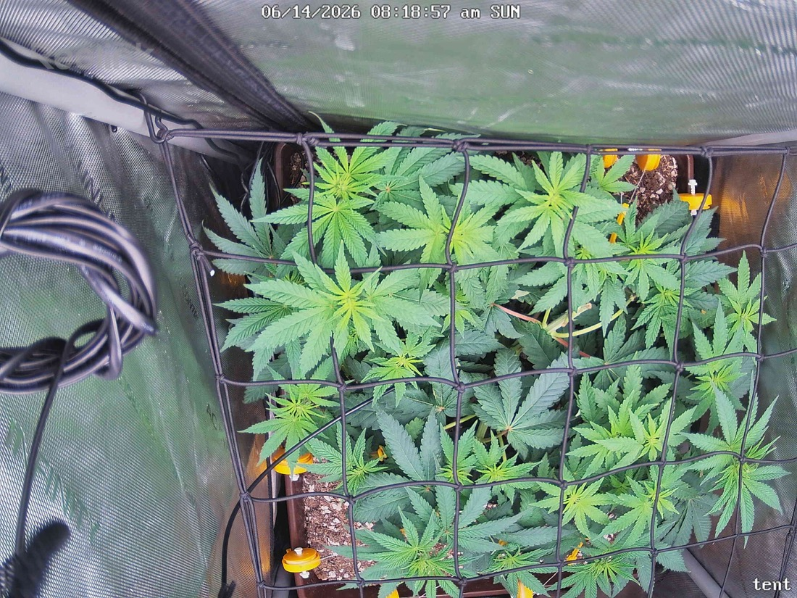

← All reports
Jun 14, 2026
Sun Jun 14, 2026 — 8:18 AM

Prognosis
These two snapshots are ~73 minutes apart on the same morning (7:05 → 8:19), so this is effectively a same-session test, not a day-over-day comparison.
- What changed: Essentially nothing structurally — same canopy, same training. The only differences are lighting/exposure: the 8:19 shot is brighter and slightly cooler-toned as the light ramps, which makes leaves read a touch more teal. No new node extension expected in this window.
- Canopy/structure: Net (scrog) from yesterday's work is in place and doing its job — colas spread flat and evenly across the 2×2 footprint, good light distribution, no single dominant cola towering. The horizontal training is paying off.
- Color: Healthy medium-to-deep green throughout. No yellowing, no interveinal chlorosis, no edge burn. The slightly grayish cast on some upper leaves is the post–Green Cleaner residue from last night's treatment plus the cooler exposure — normal, not bleaching.
- Stress signs: None visible. No tacoing, no clawing, no droop (leaves are flat and praying-ish), no burnt tips. Soil surface looks appropriately moist post-watering (watered 6/12, 1gal bottom).
- Pests: Can't resolve mite stippling at this resolution, but no webbing, no obvious fresh stippling on the upper surfaces shown. Your 6/11 close inspection found zero mites — encouraging. Stay on the every-3-day Green Cleaner cadence regardless (egg hatch cycle); next round due ~6/16.
- Phase check: Right on track. Germ 4/28, flipped to 12/12 on 6/3 — so ~11 days into flower. Bushy, leveled, net-filled canopy is exactly what you want entering the stretch/early-flower window. You should start seeing pistil development at node sites over the next week.
- Light: Still at ~500–600 PPFD. Canopy is handling it with zero stress, so you're clear to keep nudging toward 700 over the coming days as flower establishes; 700–800 is a reasonable ceiling for an SF-2000 Pro in a 2×2 once she's deeper into flower and you confirm no tacoing.
Suggested next actions: No action needed today — continue the Green Cleaner schedule (next ~6/16) and keep monitoring for mite recurrence.
Overall: Healthy, well-trained plant, no stress, properly positioned for early flower — this pair is just a short-interval test and confirms nothing has regressed.